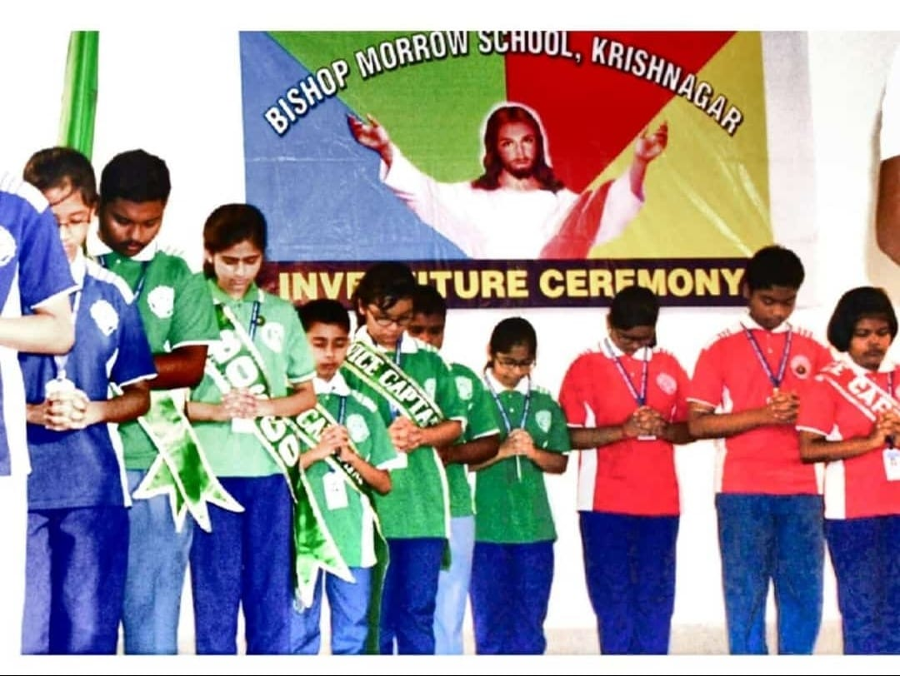

Years: KG – Class 10
The place where it all began. Tucked away in the lanes of Krishnagar, Bishop Morrow wasn’t just my school — it was my first home, not the second. The tiled corridors, the echoing bell, the ever-serious prefects, and the discipline drills every morning shaped more than just my habits — they shaped my attitude. The school demanded sincerity and neat handwriting, and in return gave back stories, friendships, and the joy of tiny wins.
I served as the Junior Bosco House Captain, but leadership came through more than just the badge — through responsibilities, morning assemblies, and keeping your house flag upright. I was actively involved in cultural events: hosting programmes, poem recitations, storytelling, drama, dance, group singing, quizzes — you name it. BMS always encouraged participation, and I was rarely one to sit out.
The blackboards didn’t always erase well, but the lessons stuck. More than a decade here taught me to value punctuality, respect, and the ability to speak on stage without shaking like a leaf. Looking back, it wasn’t just a school — it was my training ground.
